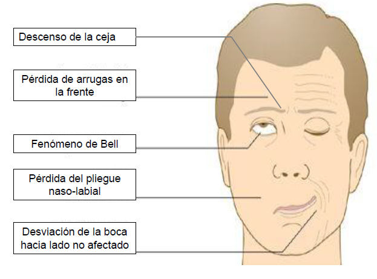

"Mi capacidad es mayor que mi discapacidad"
(Nikki Rowe), enfocándose en el potencial personal sobre las limitaciones
físicas, o "Conóceme por mis habilidades, no por mis discapacidades"
(Robert M. Hensel), un llamado a ver más allá de la condición para reconocer el valor individual y las capacidades únicas de cada persona.
Causas comunes
La parálisis es la pérdida total o parcial de la función muscular en una parte del cuerpo,
causada por un problema en la comunicación entre el cerebro y los músculos, ya sea por lesión o enfermedad,
y puede ser temporal o permanente. Existen tipos como la parálisis cerebral (daño cerebral que afecta movimiento y postura) y la parálisis facial
(afecta un lado de la cara). Su diagnóstico implica identificar la causa subyacente
(accidentes cerebrovasculares, lesiones medulares, enfermedades neurológicas) y el tratamiento varía,
incluyendo fisioterapia, medicamentos y cirugía.
Accidentes cerebrovasculares (derrames)
ocurre cuando el flujo sanguíneo a una parte del cerebro se interrumpe, causando la muerte de células cerebrales
por falta de oxígeno y nutrientes, lo que puede llevar a daño permanente, discapacidad o muerte; existen dos tipos principales,
el isquémico (por coágulo) y el hemorrágico (por sangrado), y la acción rápida para reconocer síntomas como debilidad súbita en una
cara/brazo, dificultad para hablar o problemas visuales es crucial,
siendo factores de riesgo principales la presión arterial alta, tabaquismo y diabetes.
Lesiones de la médula espinal o fracturas.
son daños al grupo de nervios que conecta el cerebro con el cuerpo, a menudo causados por
fracturas o desplazamientos de las vértebras que rodean la médula, interrumpiendo señales y provocando
pérdida de sensación, movimiento y funciones corporales. Estas lesiones pueden ser completas
(pérdida total de función) o incompletas (pérdida parcial) y son emergencias médicas que requieren inmovilización inmediata,
diagnóstico por imagen (TC/RM) y tratamientos que van desde medicamentos y fisioterapia hasta cirugía, enfocados en estabilizar
la columna y manejar complicaciones como la parálisis,
problemas de vejiga/intestino o espasticidad.
Enfermedades autoinmunes
son trastornos donde el sistema inmunitario ataca por error tejidos
sanos del cuerpo, confundiéndolos con invasores, lo que provoca inflamación y daño en
órganos como articulaciones, piel, tiroides, páncreas o vasos sanguíneos. Causas exactas son desconocidas,
pero hay predisposición genética y factores ambientales como virus. Síntomas comunes incluyen fatiga, fiebre,
dolor articular y erupciones, y ejemplos notables son la artritis reumatoide,
lupus, diabetes tipo 1 y esclerosis múltiple.
Enfermedades nerviosas
Trastornos que afectan el sistema nervioso (cerebro, médula espinal y nervios periféricos),
causando síntomas como dolor, debilidad, entumecimiento, problemas de movimiento, habla y cognición,
y abarcan desde problemas comunes como la neuropatía diabética hasta enfermedades neurodegenerativas
progresivas como el Alzheimer, Parkinson, Esclerosis Múltiple (EM) y ELA, así como condiciones autoinmunes como el
Guillain-Barré y problemas como la epilepsia, que pueden ser causadas por genética,
toxinas, infecciones, traumatismos o problemas metabólicos.
Daño cerebral
El daño cerebral, o Daño Cerebral Adquirido (DCA), es una lesión repentina
en el cerebro por causas como traumatismos craneoencefálicos, accidentes
cerebrovasculares (ACV), falta de oxígeno (anoxia), infecciones o tumores,
que provoca secuelas físicas, cognitivas y emocionales (problemas de memoria,
lenguaje, movimiento, conducta) y requiere rehabilitación
integral para recuperar funciones y mejorar la calidad de vida.
